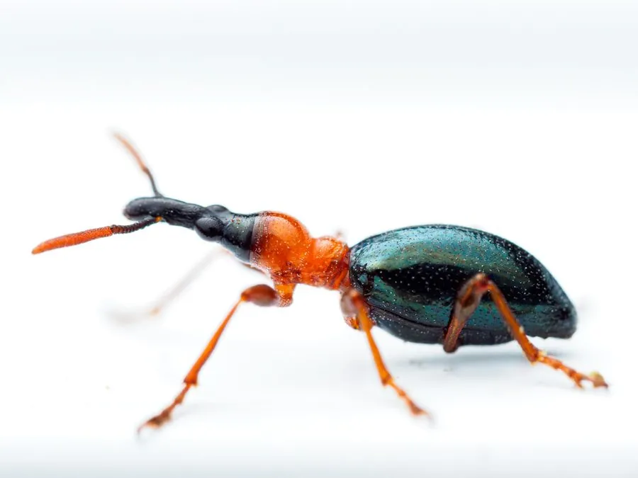

昆虫 · 动物界
甘薯小象甲 Cylas formicarius

体形细长如蚁的小型象甲，前胸红褐、鞘翅蓝黑，幼虫蛀食甘薯薯块形成隧道，是国际公认的检疫性害虫。
- 分类
- 门节肢动物门纲昆虫纲目鞘翅目科象甲科属蚁象属
- 栖息环境
- 甘薯田、薯窖和贮运场所
- 地理分布
- 原产印度，广布全球热带亚热带，中国南方各省常见
- 保护级别
- 无保护问题；为国际检疫性害虫，以检疫和田园清洁防治
物种志
甘薯小象甲的体长约六毫米，体形细长，头、胸和足呈红褐色，鞘翅蓝黑色而带金属光泽，腹部末节外露，整体看上去像一只小蚂蚁，甘薯蚁象之名由此而来。它的头部向前延伸成短喙，触角细长，末端略膨大，足细长，善爬行。雌虫体型略大于雄虫，鞘翅的光泽也更强。
它原产印度，现广布于全球热带和亚热带地区，在中国见于南方各省，栖息在甘薯田、薯窖和贮运场所，成虫白天活动，善爬行，受惊时假死跌落，能飞但飞不远。幼虫蛀入薯块和藤蔓内部，形成弯弯曲曲的黑色隧道，隧道内的薯肉变苦发臭，完全失去食用价值，是甘薯最重要的害虫之一，也是国际检疫对象，一年多发生三至八代，以成虫、幼虫或蛹在薯块和藤蔓中越冬。防治以严格检疫、清洁田园和药剂处理为主。
形态与习性
- 体长约六毫米，细长如蚁
- 体色头胸足红褐，鞘翅蓝黑带金属光泽
- 为害幼虫蛀食薯块与藤蔓，形成黑色隧道
- 后果隧道内薯肉变苦发臭，失去食用价值
- 习性成虫白天活动，善爬行，受惊假死
- 发生世代一年三至八代，在薯块或藤蔓中越冬
趣味知识
- 它长得像蚂蚁，头胸红褐、鞘翅蓝黑，混在薯藤上不容易被认出来。
- 幼虫在薯块里钻出黑色的隧道，整块甘薯会发苦发臭。
- 它是国际检疫对象，调运种薯时必须严格检查。